As inevitable as it is, one of the most common words in our nightly FaceTime conversations is long-distance. This is a chapter on how we've approached the elephant in the room, and attempted to coexist with the beast. Spoiler alert: it's a happy ending.
When my friends first learned of the fact that I was going out with Nicole, they always followed up with the question: "But aren't you guys...pretty far apart?" Far apart is an understatement, in my opinion. Unless you're an extremely ambitious high school senior, you probably don't mention Duke and Dartmouth in the same sentence - for a good reason, too. Google Maps gives a 25-hour estimate for a bus ride that connects Durham, NC, and Hanover, NH. Yes, that's why the Wright Brothers invented aircraft, but not only is the cost quite prohibitive, but the lack of direct flights require us to use Boston's Logan Airport as an intermediary hub, which further exacerbates our woes, both money and time-wise. The list goes on and on, but you get the point.
Neither of us had fathomed, much less attempted, long-distance relationships up until August 15th, 2015, when I boarded the plane to the States to resume sophomore year of college after a 2-year hiatus. In retrospect, as ironic as it sounds, the fact that both of us were unaware of how challenging it would get at times was what enabled us to dive fearlessly and rather recklessly into the relationship.
Everything took a turn for the change. No longer could we hold hands every day, nor could we enjoy a warm pizza together whenever we felt like it. It opened my eyes to how much I had been taking for granted, the small joys that really mean a lot after all. Before, I had thought that it was the big events that would live to tell the tale - the pricey dinners, the thought-out date courses, the material gifts. Little did I know that after a month, what stood out the most were the seemingly trivial moments, the snippets of our time together that stitched up to create the exquisitely embriodered fabric that we are today.
Unaccustomed as we were to the new environment, we started building everything from the ground up again. For some reason we had stuck to a rather primordial form of communication for the first few weeks: online voice chats, powered by Kakaotalk, a big-time Korean messaging app. I guess part of it was because we were content with the fact that we could listen to each others' voices; a bigger reason to blame was inertia. It took a surprisingly long time for us to finally realize that both of us were iPhone users, and so began the countless nights of FaceTime. 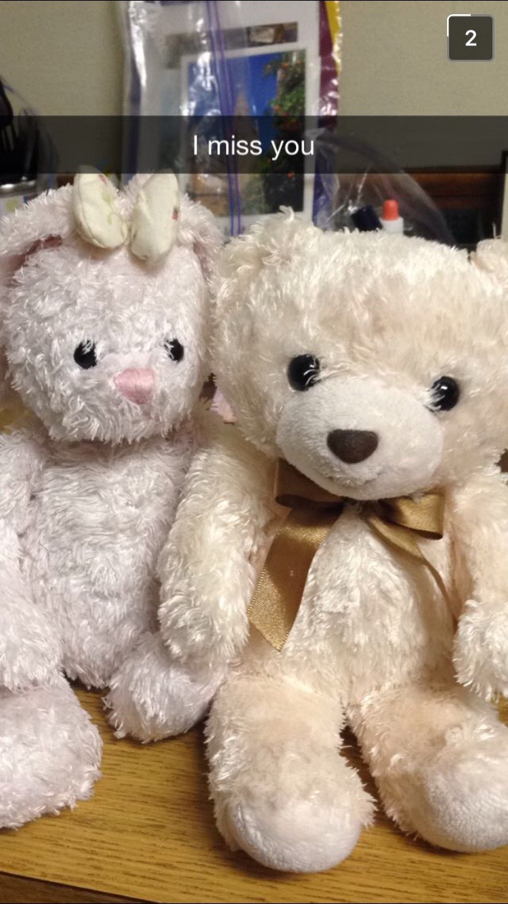
Up until this point we had never had major conflicts - the biggest one was probably back in Korea, when I was in the middle of a company dinner and didn't pick up her call without informing her in any way. But even that was mitigated within hours, largely because we could clear up any misunderstandings the first thing next day by holding hands and talking over the issue. That, as it turned out, was a huge luxury. Distance exacerbated differences in opinions and perspectives, which in turn lit fire to fuel. A lot of it had to do with mistakes on my part, and it hurt me when all I could blame were the constants of the universe: distance and time.
Light seemed to dawn in mid-September, when the first of Nicole's three quarters began its course as well. Aligned in the same time zone again, communication became much easier in that we could actually talk to each other when the sun was up. Again, by this point it was the small wins that really counted.

First flowers in the States
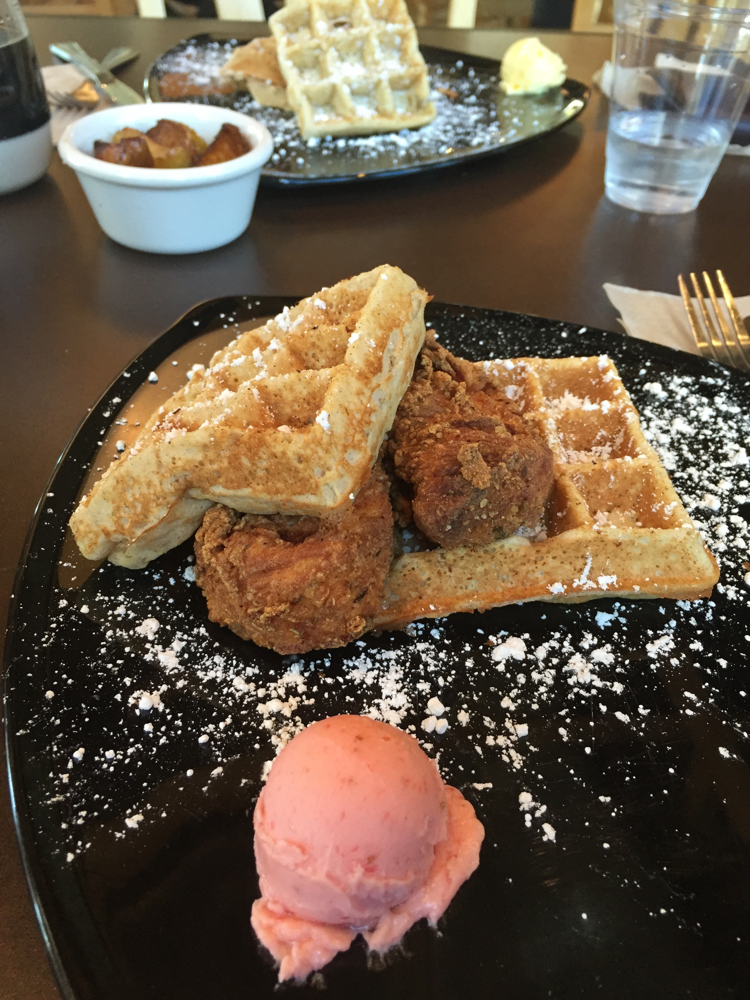Remember these menus? ;)
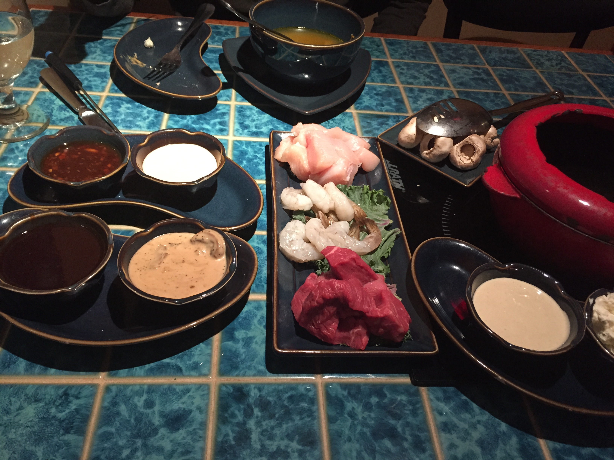 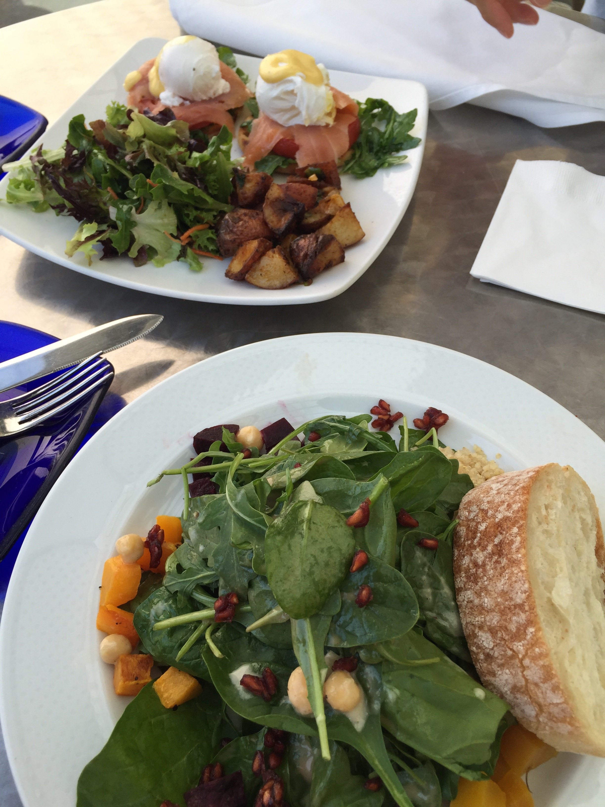 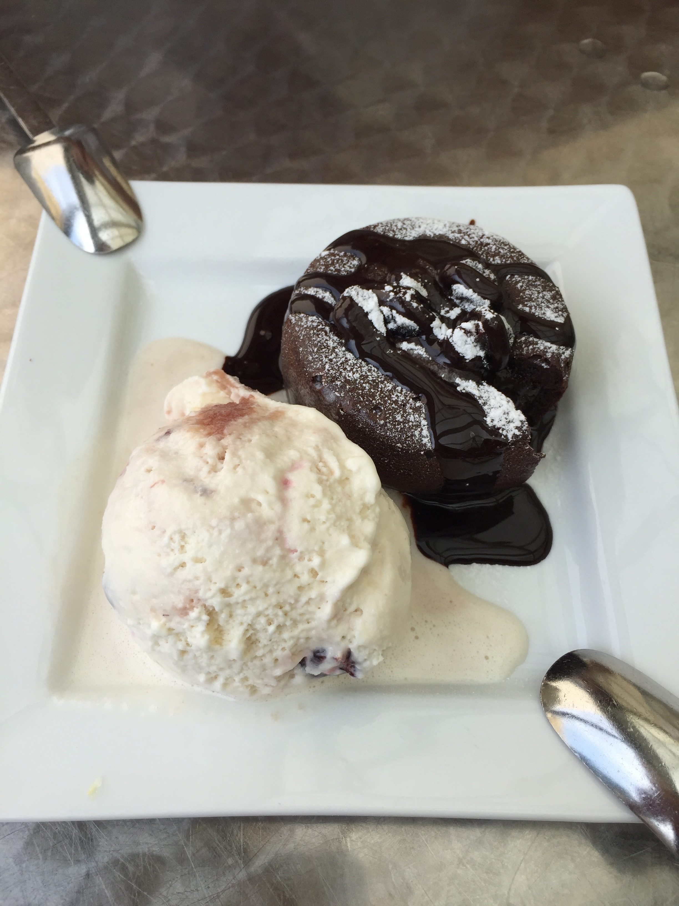Schoolwork took its toll on us, and we buried our heads under the pile of books - in her case, more like resumes and interview prep books. For me, it was the transition to computer science that was eating me alive, on top of the fact that I had not been near an academic textbook in the last 27 months (you would not believe the stress I received before that first midterm in two-and-a-half years). For her, it was the internship search, something of a ritual for all college juniors nowadays. It was especially hard on her, not only because she had not expected the recruiting process to be this early on, but because she had not had a strong background in the financial industry before. Much of September and October went by as we both struggled to fend off our respective demons.
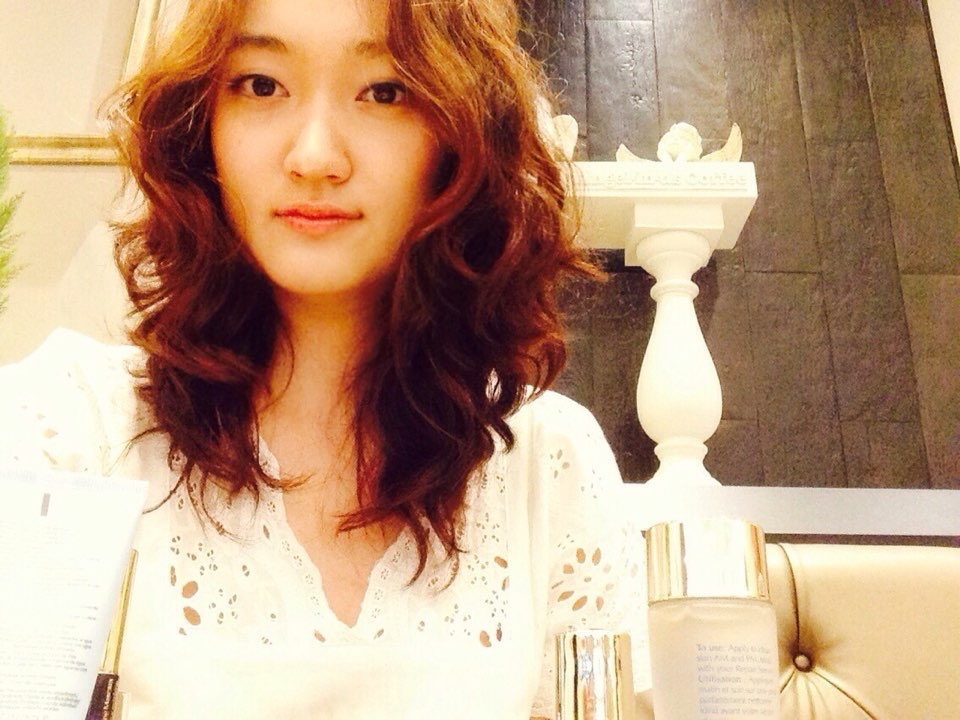In what can only be explained as a combination of meticulous preparation, quick feet, and a stroke of the leprechaun's charm, this beautiful girl landed a fabled internship at an investment bank on November 2nd, 2015. Before we knew it, the first semester of our long-distance relationship had almost come to an end, and the fact that we were so busy throughout the entire semester contributed to just how fast time seemed to whiz by.
But we weren't about to bid goodbye to Semester Numero Uno, not until we'd given it a proper farewell party. Nicole's birthday was on November 15th, but owing to our exam schedules we'd agreed to postpone her birthday celebration until Thanksgiving.
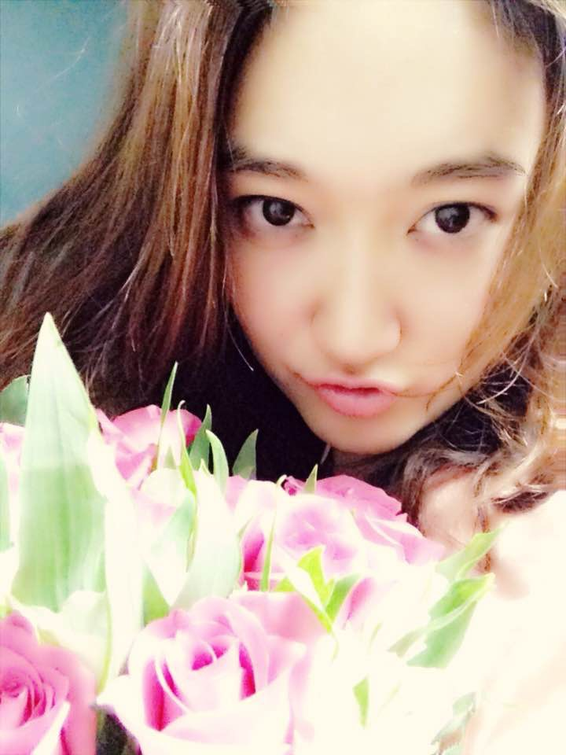I did get her flowers for the day of, but the party hadn't even started.
Because both of our families are back in Korea, Thanksgiving was panned out to be a four-day vacation, with all the time for ourselves. That is, until we learned that Nicole's final exams ended the day before Thanksgiving - even after a full year, the Dartmouth quarter system has yet to break into me. Reality hit, and it was decided that we would have a single day - November 26, 2015, the day of Thanksgiving - for ourselves in Boston, after which Nicole would fly to Korea for the winter while I'd go back to study for my own finals.
In retrospect there are many improvements that could have been made to the day. The weather was chilly (frigid, to be honest, considering how I came from a state that wears shorts on Christmas), and almost all of the shops were closed because of the holiday. To be honest, that did not matter a single bit, because that's how perfect the day was, so much that even today we talk about how Boston was practically flawless, in that everything went the way we wanted it to.
The day kicked off with lunch at a seafood venue specializing in lobsters. I personally hadn't had lobster in forever, so the warmth of it melting on my tongue was nothing short of delectable.
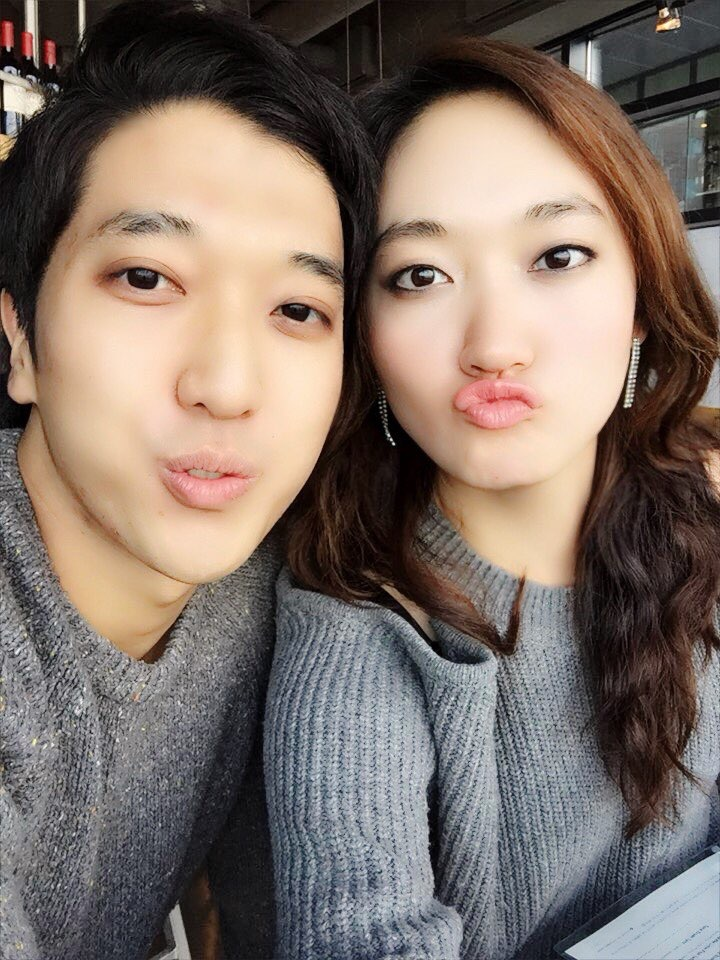
Then began the city excursion. Neither of us had travelled around the city before, so it took a bit of Ubering to get to know places. We found ourselves amongst the Boston Piers, where the skies were absolutely beautiful, the clearest, bluest ones I'd seen in a long time. What started out as a casual selfie ended up producing one of my favorite pictures of us all-time, if not the favorite.
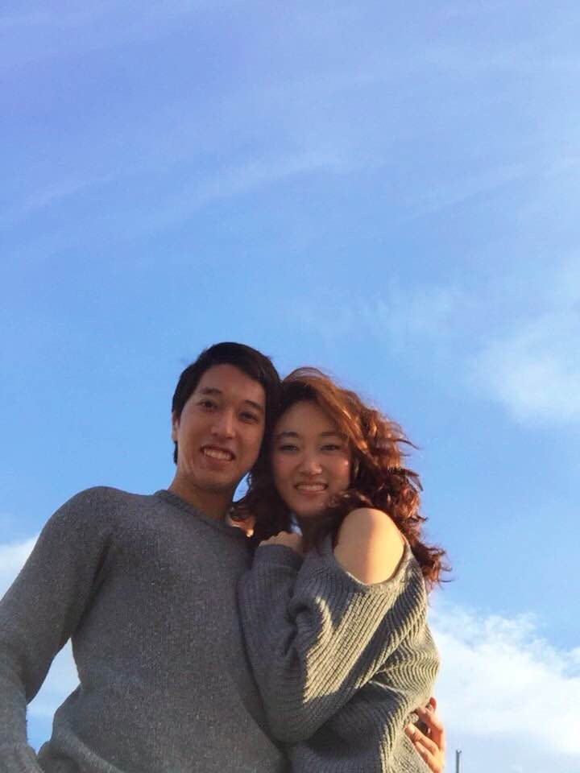"Picture Perfect"
Newbury Street and Prudential Center were mostly closed, but that didn't stop us from enjoying the festivities of holiday season. We even found a pair of beautiful heels that Nicole still recalls to this day. 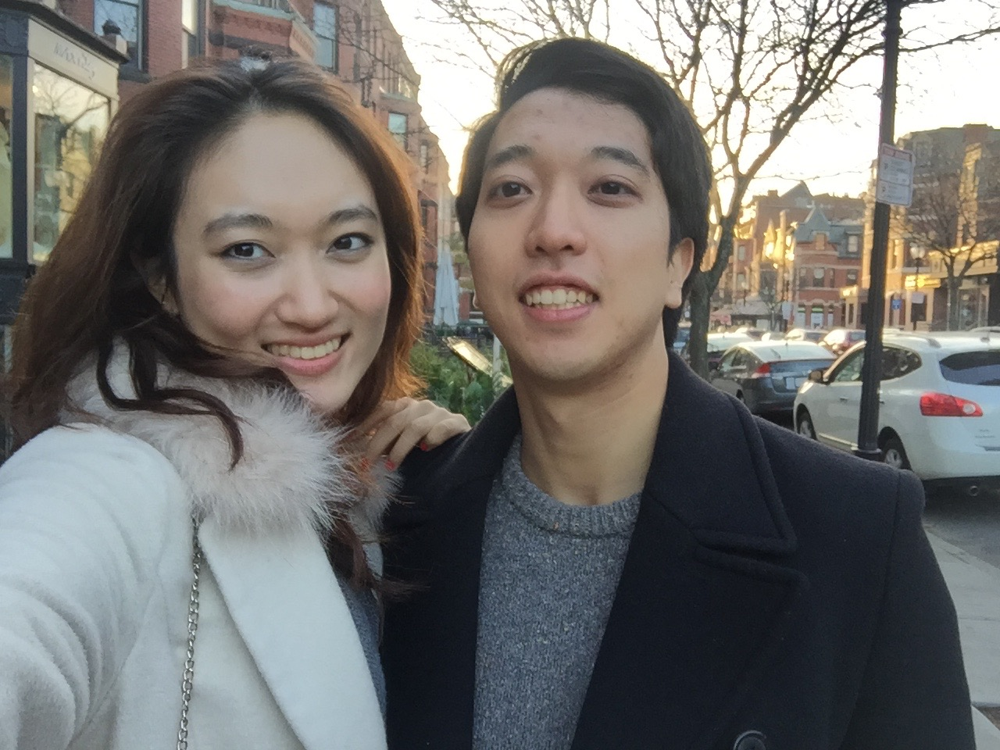
The highlight of our party was reserved for the last - Grill 23. I cannot stress how good the steak was, not just because of the taste, but because it was the perfect way to close out what had been a roller coaster of the first semester. There were many things to celebrate, that's for sure, including Nicole's birthday and her securing of a fancy internship. But what's important was the fact that despite all the changes, we had made it - and that we learned that we would be able to make it.
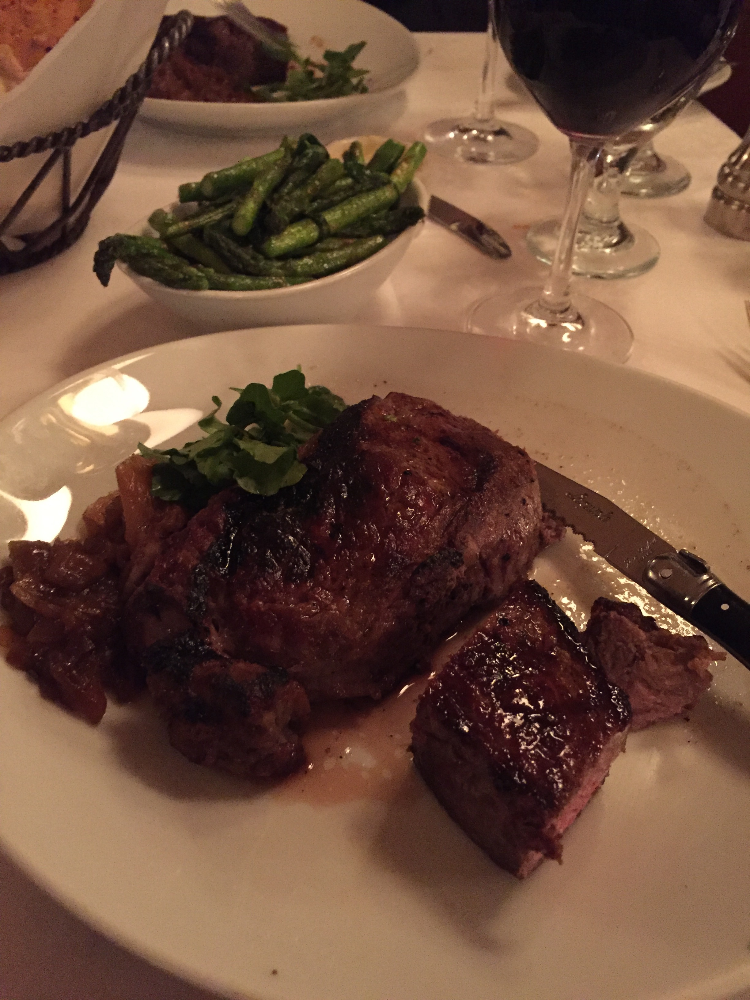 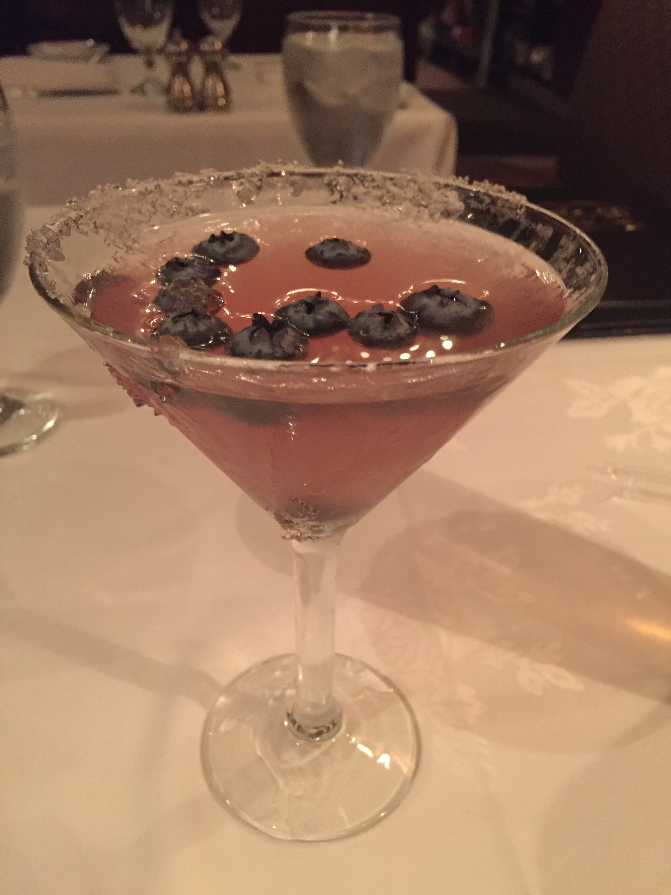 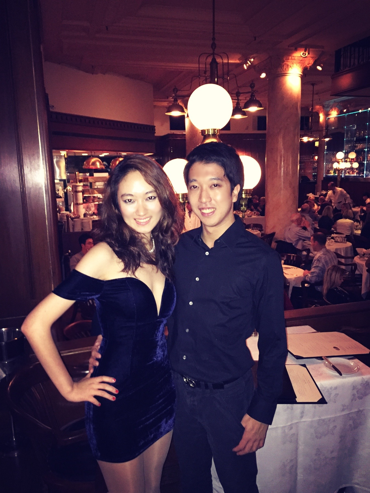"It was a day to remember."
Boston left as abruptply as it had come. Nicole flew back to Korea to spend time with her family, while I returned to Duke to take on the monster called finals. But really, that one day was representative of who we were up until that point - serendipitous, seemingly out of nowhere, and worth every second, dreamlike.